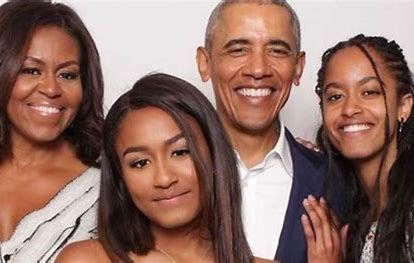

Barrack Obama
About Barrack Obama
Notable Achievements
- First person of color to get elected as President of the United States
- Lifted the US out of the 2008/2009 financial crisis
- Passed laws against wall street bankers to prevent another crisis
- Pulled most military personel out of Iraq
- Reduced Unemployment and Poverty rates while in office
- Added 32 million americans to the nations healthcare with Obamacare
- Was an advocate for green and renewable engergy which he gave $90 billion to fund the research
- Neutralized the leader of Al-Queda, Osama Bin Laden
- Due to his unwavering commitment to promotion of peace across the globe, he recieved
the nobel peace prize in 2009
- Re-established domestic relations with Cuba
Timeline Of Notable Events
- 1961-Born in Honolulu, Hawaii
- 1983-Graduated from Columbia University with a Bachelor of Arts degree
- 1988-Began to study at Harvard Law School
- 1990-Became the first black president of the Harvard Law Review
- 1992-Began to teach constitutional law at the University of Chicago Law School. In October, Obama married Michelle Robinson
- 1996-Was elected to Illinois Senate
- 1998-His first daughter, Malia was born
- 2001-His second daughter, Natasha was born
- 2002-Started running for US Senate
- 2004-Elected to US Senate
- 2005-Sworn in to US senate
- 2008-Was elected as 44th President of the US
- 2009-Sworn in as 44th President of the US
- 2011-Announced reelection campaign
- 2011-Recieved Nobel Peace Prize
- 2012-Reelected for 2nd term as President of the US
- 2016-First president to visit Cuba
- 2017-Last day in office

Charities and foundations